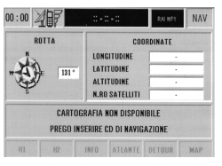

5580MC SATELLITE NAVIGATOR OPERATION CHECK
- Path
- Test > 55 ELECTRICAL EQUIPMENT > 5580 SPECIAL ACCESSORIES > 5580M ON-BOARD NAVIGATOR > 5580MC SATELLITE NAVIGATOR OPERATION CHECK
- Kind
- test / check procedure
- Applies to
- all engines; all production periods
- Interactive page
- https://sloeber94.github.io/elrnDB-fCrm/en/#/194002547
Applies to: all engines; all production periods
Check the operation of the satellite navigation system
- Check that the map disc is consistent with the vehicle model.
- In NAV mode, check that the number of satellites in the last line on the right is at least 3 indicating that the satellite reception is correct. If the reading for the number of satellites is less than 3 then the reception is not good enough to locate the vehicle. It is probably a question of insufficient cover. In this case try and move the vehicle to an area where there is good reception or compare the reception with other cars located in the same place.

The satellite reception test should be carried out in an open area. In this case, without a comparison it is impossible to say whether or not the navigator is defective. If, on the other hand, the comparison reveals even worse reception, check the connection of the satellite aerial, the electrical continuity, the correct power supply and, if necessary, test with different equipment that is definitely working properly.
For the road test:
- Exit to NAV mode
- Check that the arrow moves consistently with the vehicle speed, otherwise check the presence of the milometer signal.
- Check that the arrow changes direction in line with the vehicle. If the arrow does not change direction this means that the gyroscope inside the map reader is broken and the Connect should be replaced.
- Enter a destination and activate the calculation of the route. Wait for the first instruction and the route on the display and check that it is correct.
Irregular instructions: before or after junctions, arrow out of position, they may be due to CD maps that are not up to date: a missing instruction stems from the fact that a road is not on the map because it has not been processed in digital form or the road network has been changed compared with the one on the map.
The navigator calculates the position of the vehicle both by means of the satellite signal and using the wheel rpm and the internal gyroscope bush signal. Problems of accuracy may arise when:
- The odometer speed signal and reversing signal are not received correctly
Occasions when the navigation system should be initialised:
- The vehicle is being transported with the battery disconnected and travelling in a tunnel (the navigator loses the references).
- Immediately after having changed the tyres (since the wheel rpm/distance conversion factor is not accurate).
- When replacing the Nit.
To initialize the navigator it is necessary to drive about 100 km in optimum satellite reception conditions. If all the tests have not highlighted defects then the problem lies in the Connect which should be replaced.